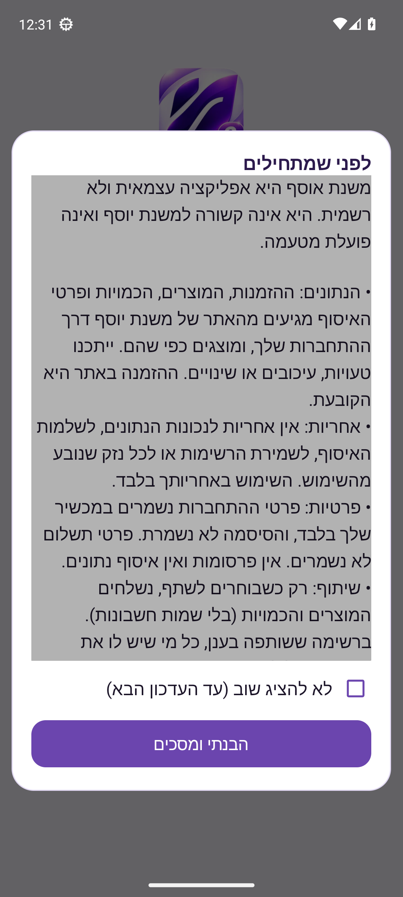


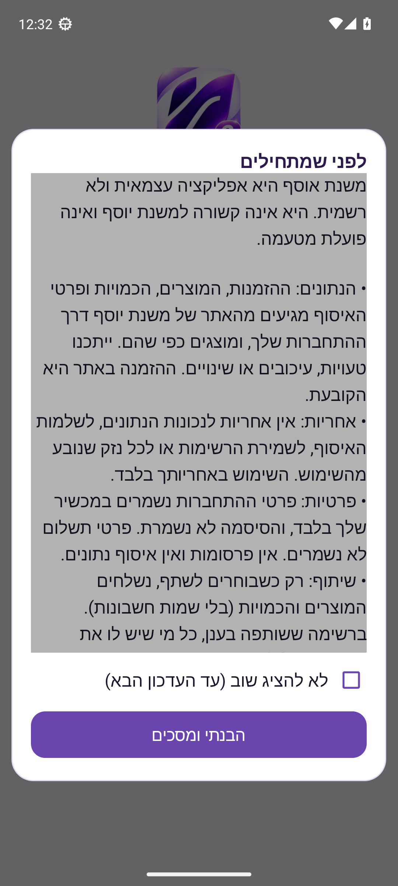


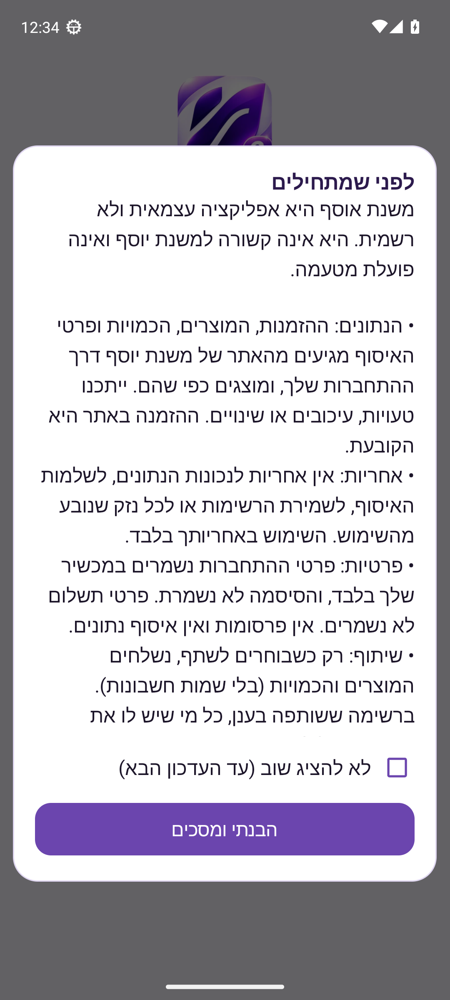


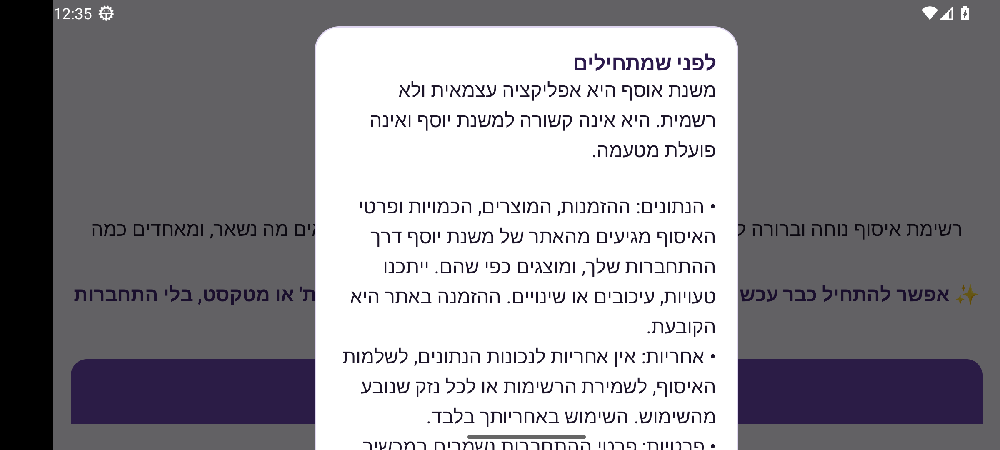


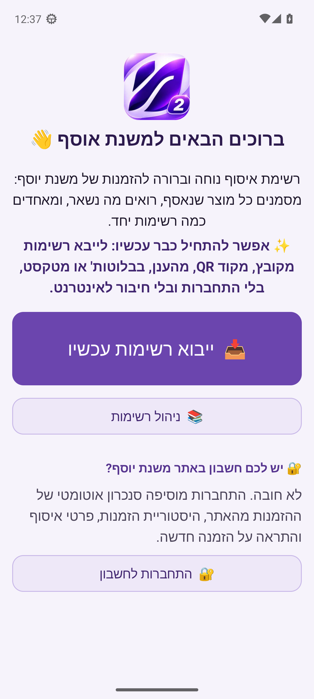

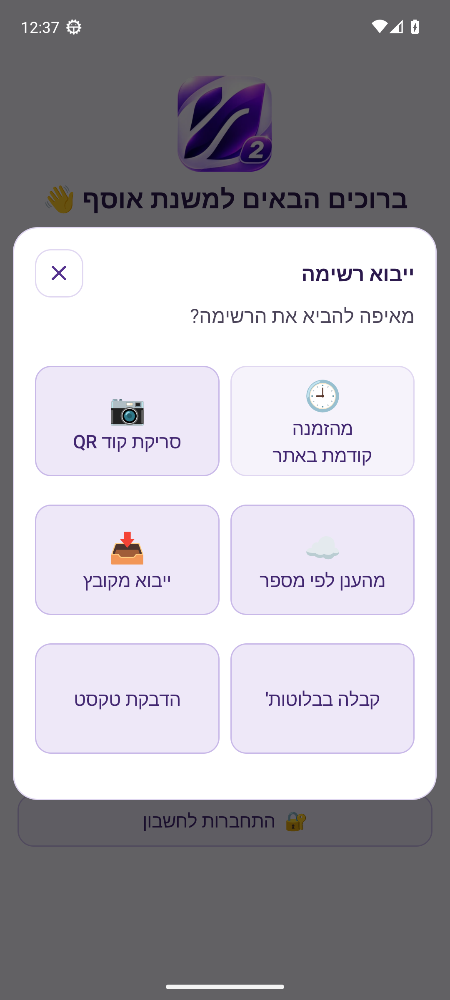

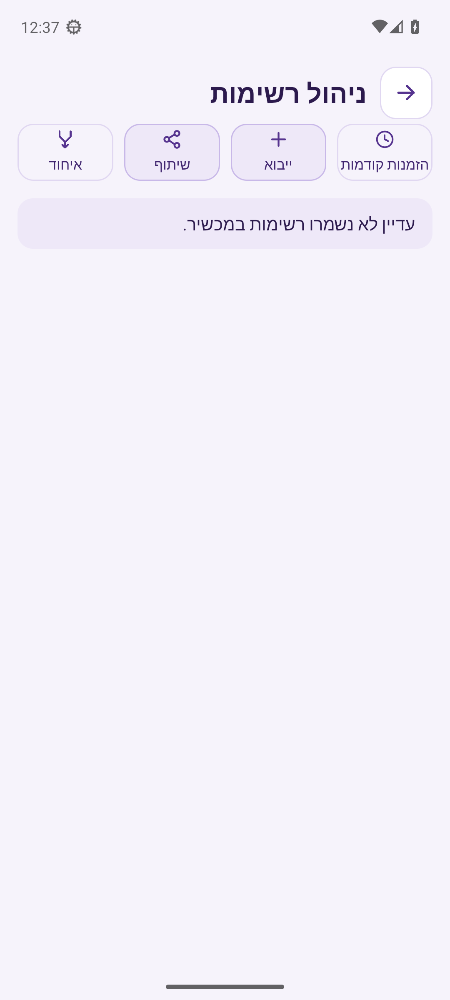

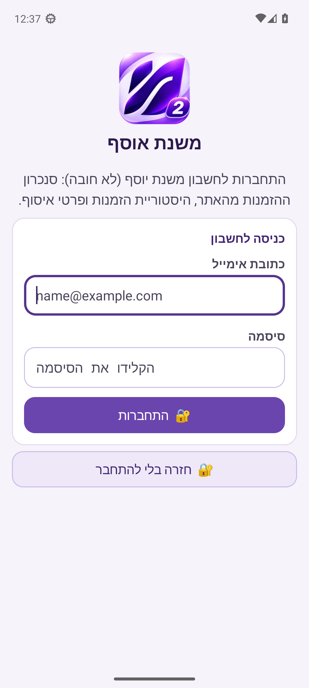


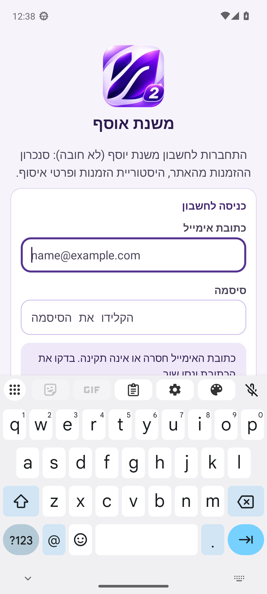

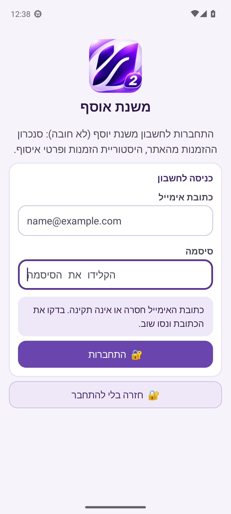

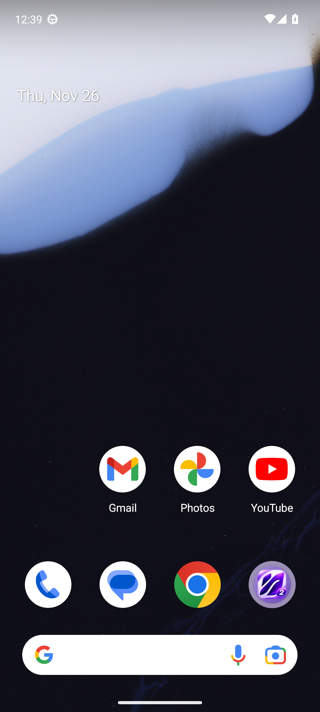
Package org.mishnatyosef.pickup · {"model": "sdk_gphone64_x86_64", "sdk": "33", "release": "13", "abi": "x86_64", "locale": "", "screen": "1080x2400"}
| # | Action | Detail | Result | Error |
|---|---|---|---|---|
| 1 | clear_data | passed | ||
| 2 | push | src='fixtures/ui-test-features.txt', dest='/sdcard/Download/ui-test-features.txt' | passed | |
| 3 | launch | passed | ||
| 4 | wait_for | text='כניסה לחשבון' | failed | element not found within 30s: text='כניסה לחשבון' |
| 5 | scroll_to | text='ייבוא רשימה מקובץ' | failed | not found after scrolling: text='ייבוא רשימה מקובץ' |
| 6 | tap | text='ייבוא רשימה מקובץ' | failed | element not found within 10s: text='ייבוא רשימה מקובץ' |
| 7 | tap | text='ui-test-features' | failed | element not found within 10s: text='ui-test-features' |
| 8 | wait_for | text='נמצאו 1 רשימות' | failed | element not found within 15s: text='נמצאו 1 רשימות' |
| 9 | tap | text='ייבא רשימות' | failed | element not found within 10s: text='ייבא רשימות' |
| 10 | wait_for | 1+2+3+4+1.5 units | failed | element not found within 10s: text='נאספו 0 מתוך 11.5' |
| 11 | screenshot | name='imported-5-items' | passed | |
| 12 | assert_text | decimal quantity kept | failed | element not found within 5s: text='1.5' |
| 13 | tap | text='חיפוש פריט' | failed | element not found within 10s: text='חיפוש פריט' |
| 14 | type | value='Pasta', hide_keyboard=True | passed | |
| 15 | wait | seconds=1 | passed | |
| 16 | screenshot | name='search-pasta' | passed | |
| 17 | assert_text | text='Pasta' | failed | element not found within 5s: text='Pasta' |
| 18 | assert_not_visible | search filters other items | passed | |
| 19 | type | class='EditText' | failed | element not found within 10s: class='EditText' |
| 20 | wait | seconds=1 | passed | |
| 21 | assert_text | cleared search shows all items | failed | element not found within 5s: text='מלפפון' |
| 22 | long_press | text='Pasta' | failed | element not found within 10s: text='Pasta' |
| 23 | wait_for | text='איסוף כמות חלקית' | failed | element not found within 5s: text='איסוף כמות חלקית' |
| 24 | screenshot | name='partial-dialog' | passed | |
| 25 | swipe | RTL slider: try to pick more units | failed | element not found within 10s: class='SeekBar' |
| 26 | screenshot | name='partial-dialog-moved' | passed | |
| 27 | tap | text='אישור הכמות' | failed | element not found within 10s: text='אישור הכמות' |
| 28 | wait | seconds=1 | passed | |
| 29 | scroll_to | the partial card sits in the collected section, below the fold | failed | not found after scrolling: text='נאספו חלקית' |
| 30 | screenshot | name='partial-collected' | passed | |
| 31 | scroll_to | text='נאספו 1 מתוך' | failed | not found after scrolling: text='נאספו 1 מתוך' |
| 32 | tap | desc='איפוס ליקוט' | failed | element not found within 10s: desc='איפוס ליקוט' |
| 33 | wait_for | text='להחזיר את כל המוצרים' | failed | element not found within 5s: text='להחזיר את כל המוצרים' |
| 34 | screenshot | name='reset-confirm' | passed | |
| 35 | tap | text='איפוס' | failed | element not found within 10s: text='איפוס' |
| 36 | wait_for | text='נאספו 0 מתוך 11.5' | failed | element not found within 5s: text='נאספו 0 מתוך 11.5' |
| 37 | tap | desc='רשימה לפי חשבון' | failed | element not found within 10s: desc='רשימה לפי חשבון' |
| 38 | wait | seconds=1.5 | passed | |
| 39 | screenshot | name='view-by-account' | passed | |
| 40 | tap | desc='רשימה מאוחדת' | failed | element not found within 10s: desc='רשימה מאוחדת' |
| 41 | wait | seconds=1.5 | passed | |
| 42 | screenshot | name='view-combined' | passed | |
| 43 | tap | text='גבינה' | failed | element not found within 10s: text='גבינה' |
| 44 | assert_text | text='נאספו 1.5 מתוך 11.5' | failed | element not found within 5s: text='נאספו 1.5 מתוך 11.5' |
| 45 | rotate | to='landscape' | passed | |
| 46 | wait | seconds=1.5 | passed | |
| 47 | assert_text | progress survives rotation | failed | element not found within 5s: text='נאספו 1.5 מתוך 11.5' |
| 48 | screenshot | name='landscape' | passed | |
| 49 | rotate | to='portrait' | passed | |
| 50 | wait | seconds=1.5 | passed | |
| 51 | tap | desc='הגדרות' | failed | element not found within 10s: desc='הגדרות' |
| 52 | wait_for | text='סיכום מהיר' | failed | element not found within 8s: text='סיכום מהיר' |
| 53 | screenshot | name='settings-top' | passed | |
| 54 | swipe | direction='up' | passed | |
| 55 | screenshot | name='settings-middle' | passed | |
| 56 | swipe | direction='up' | passed | |
| 57 | swipe | direction='up' | passed | |
| 58 | screenshot | name='settings-bottom' | passed | |
| 59 | scroll_to | text='רשימות שמורות' | failed | not found after scrolling: text='רשימות שמורות' |
| 60 | tap | text='רשימות שמורות' | failed | element not found within 10s: text='רשימות שמורות' |
| 61 | wait | seconds=2 | passed | |
| 62 | screenshot | name='saved-lists' | passed | |
| 63 | back | passed | ||
| 64 | wait | seconds=1 | passed | |
| 65 | back | passed | ||
| 66 | wait | seconds=1 | passed | |
| 67 | launch | restart=False | passed | |
| 68 | screenshot | name='before-explore' | passed | |
| 69 | explore-tap | לא להציג שוב (עד העדכון הבא) | passed | |
| 70 | explore-tap | הבנתי ומסכים | passed | |
| 71 | explore-tap | 📥 ייבוא רשימות עכשיו | passed | |
| 72 | explore-tap | סגירה | passed | |
| 73 | explore-tap | 📚 ניהול רשימות | passed | |
| 74 | explore-tap | חזרה | passed | |
| 75 | explore-tap | 🔐 התחברות לחשבון | passed | |
| 76 | explore-tap | name@example.com | passed | |
| 77 | explore-tap | name@example.com | passed | |
| 78 | explore-tap | הקלידו את הסיסמה | passed | |
| 79 | explore-tap | 🔐 התחברות | passed | |
| 80 | explore-tap | name@example.com | passed | |
| 81 | explore-tap | הקלידו את הסיסמה | passed | |
| 82 | explore-tap | name@example.com | passed | |
| 83 | explore-tap | הקלידו את הסיסמה | passed | |
| 84 | explore-tap | 🔐 התחברות | passed | |
| 85 | explore-tap | 🔐 חזרה בלי להתחבר | passed | |
| 69 | explore | auto-explore from the list screen | passed | |
| 70 | assert_foreground | skipped | foreground app is com.google.android.apps.nexuslauncher, expected org.mishnatyosef.pickup |










